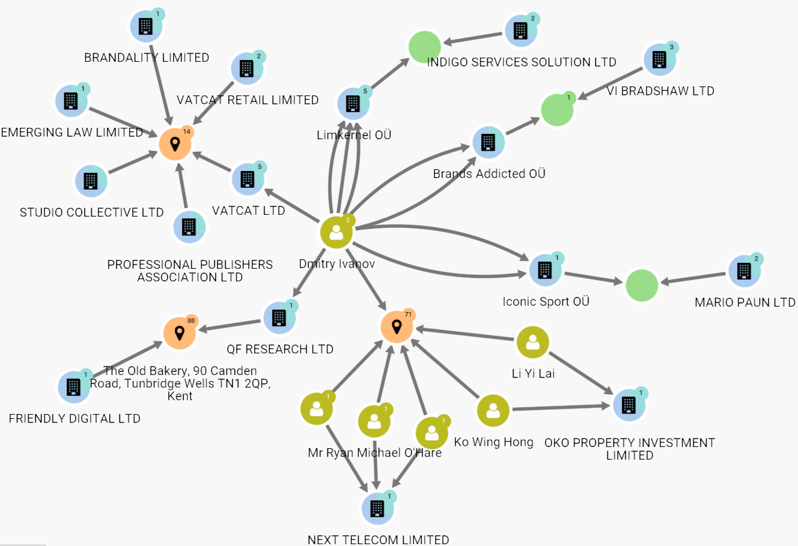

Proposal: Vast Challenge 2023 - Mini Challenge 3
Motivation
FishEye International, a non-profit organization dedicated to combatting the scourge of illegal, unreported and unregulated (IUU) fishing, has been granted access to fishing-related companies’ financial database, offered by an international finance corporation. Through their previous investigations, FishEye has discovered that companies with unusual arrangements are more likely to be engaged in IUU activities or other questionable practices. To leverage this valuable resource, FishEye has transformed the database into a comprehensive knowledge graph, which encompasses data on companies, owners, workers and revenue.
The primary objective of our project is to employ this graph to detect irregularities that may indicate a company’s involvement in IUU fishing.
Possible obstacles
Big and unclean data: There are many missing values such as in role type as well as product services. In addition, high number of nodes and edges will lead to very complex graph and require proper filtering in order to visualize the graph relationship clearly without loss of information.
Undirected graph: We need to infer the relationship direction if needed.
Approach and Shiny App Prototype
Question 1: Use visual analytics to identify anomalies in the business groups present in the knowledge graph.
Based on the product services, we will filter out companies who are involved in fishing related services. We can classify them into different business groups based on certain features and use network graph to plot the relationship of the entities (companies, beneficial owners, and workers) for each business type. Different centrality measures such as degree, betweenness and eigenvector centrality can be performed, from which an overall score to evaluate the importance of the node. The score could be used to determine the size of the node.

Ownership network: we can construct a graph with the firms as the nodes and the links as ownership relation. We expect to observe weakly connected component capturing the majority of corporations in the network as well as a bow-tie structure featuring smaller strongly connected component, which is of interest to us. (Garcia-Bernardo et al. 2017)

The above image is taken from Open Ownership.
Question 2: Develop a visual analytics process to find similar businesses and group them. This analysis should focus on a business's most important features and present those features clearly to the user.
We can perform community detection to identify clusters or groups with the knowledge graph for different business types. We could pick out the leader of the node in each community and plot its ego-network graph to see its activities with other companies.
Question 3: Measure similarity of businesses that you group in the previous question.
Using the features such as product services, country, role/type and adjacency matrix, we measure companies in the identified groups by calculating cosine similarities. We can visualize the similarity matrix of pairwise similarity score with a heatmap.
We can also use an interactive graph to visualize similarity clusters by similarity score
Dataset
Dataset contains the knowledge graph with 27,622 nodes and 24,038 edges:
Node Attributes:
type – Type of node as defined above.
country – Country associated with the entity. This can be a full country or a two-letter country code.
product_services – Description of product services that the "id" node does.
revenue_omu – Operating revenue of the "id" node in Oceanus Monetary Units.
id – Identifier of the node is also the name of the entry.
role – The subset of the "type" node, not in every node attribute.
Edge Attributes:
type – Type of the edge as defined above.
source – ID of the source node.
target – ID of the target node.
dataset – Always "MC3".
role - The subset of the "type" node, not in every edge attribute.